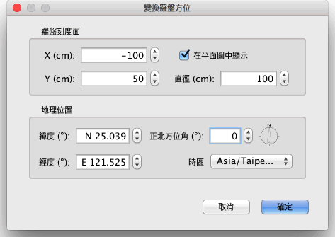

| 自訂義指南針(或羅盤)和地理位置 | |||
每個新家展示有一指南針(或羅盤)在平面圖的左上角，如下圖所示，選擇羅盤後， 可旋轉或上下左右操作移動,或者鍵盤箭使用上下左右鍵移動。 當羅盤被提升改變時 僅 會在平面圖中被選擇, 你可以旋轉它或者變換有它的指北方向。
|

|
當滑鼠指標是在這些指標之上時，它改變表明你能拖住並且下降那個點。 這個指南針上升，你的家的地理位置可能也被由於他們的方格編輯,使用一雙擊這個平面圖內指南針在這家站起來, 或關閉 平面圖→自訂義選單的羅盤....  在羅盤上, 您可以改變 位置、 直徑、指北方向和設定在平面圖中的季節天氣，來設定太陽的陰影(例如太陽直射北半球，表是北半球是夏天，反之，太陽在南半球，表是北半球是冬天， 隨著太陽在北回歸線至南迴歸線間遊走，就可判斷當地的季節，一般北台灣都是太陽由東南方(或西南方)斜射過來的，而南台灣在夏天太陽走到北回歸現時， 才有可能稍微斜射過來)、為表示陰影，你也可以選擇緯度和家的地理位置間經度和它的地區的時區。 |